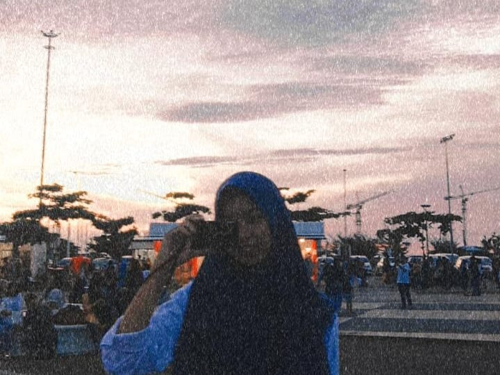
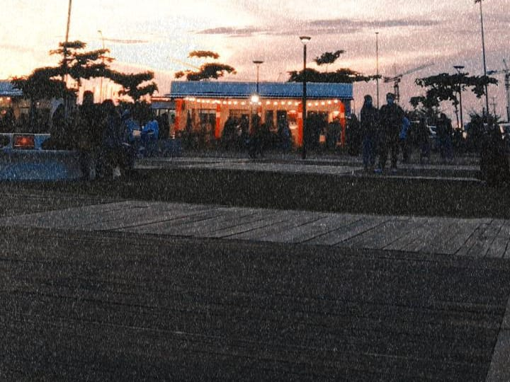
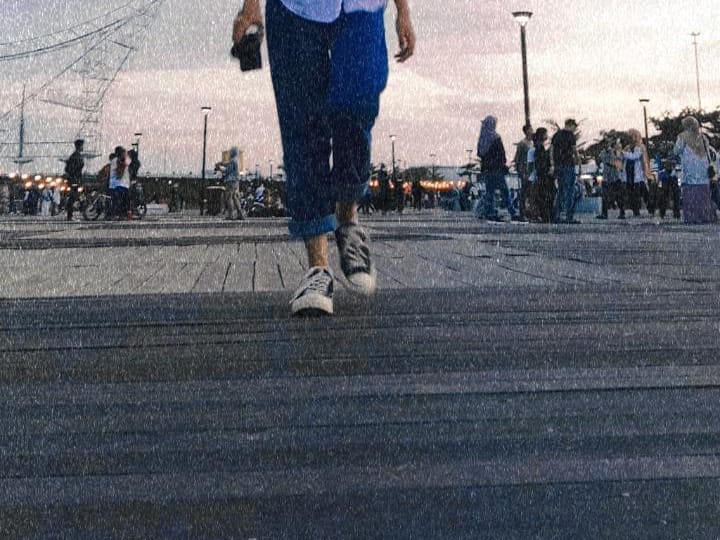
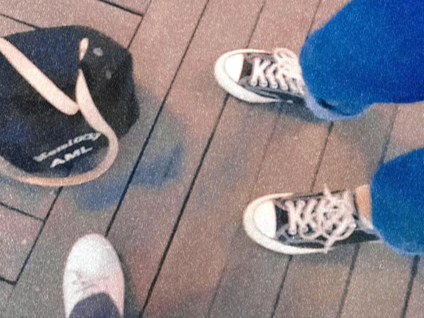

"Some of my photo collection."





My Name Mardiana Darwis Called Diana or Din, Date of Birth 27 September 2002, Place of residence Makassar city, my email address mardiana.darwis279@gmail.com.
I am currently studying at the State Polytechnic of Ujung Pandang with a major in electrical engineering, and my study program is multimedia and network engineering. I went to high school at Cokroaminoto Tamalanrea Makassar and State Junior High School 30 Makassar.
I really like cycling and not only that I have many hobbies that can make me happy when I do it and maybe some of my other hobbies are also liked by many people.
Sometimes the challenges in our lives can be said to be "ordinary" when compared to the challenges experienced by other people who continue to try harder than us to face bigger problems. All the efforts you put in will not be in vain as long as you do not give up and are able to face it to the end. Do not stop trying because you think that your efforts will be in vain. Remember that there are still many people out there who have bigger problems than you but never give up on them.
I am very happy with one of these courses, because I like to edit according to my imagination, with this I am free to express myself as a fan of editing things that interest me.
I am very happy with one of these courses, because I like according to my imagination, with this I am free to express myself as a fan of things that interest me.
No stranger to the word graphic design, I am also very happy with designs. Graphic design can also express what we like which can make us sometimes feel satisfied with interesting things.
" THANK YOU "